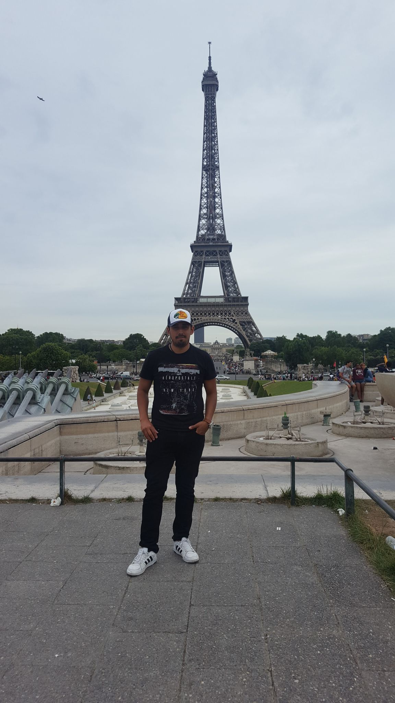
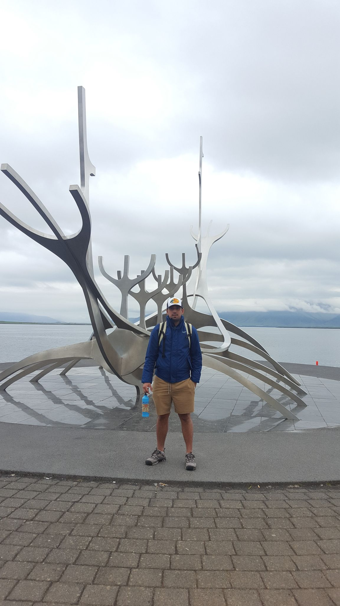
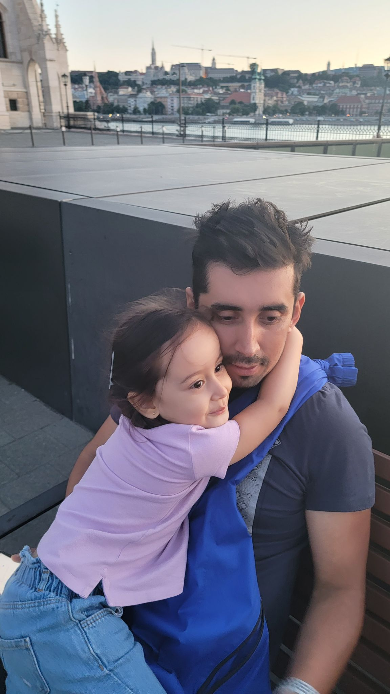
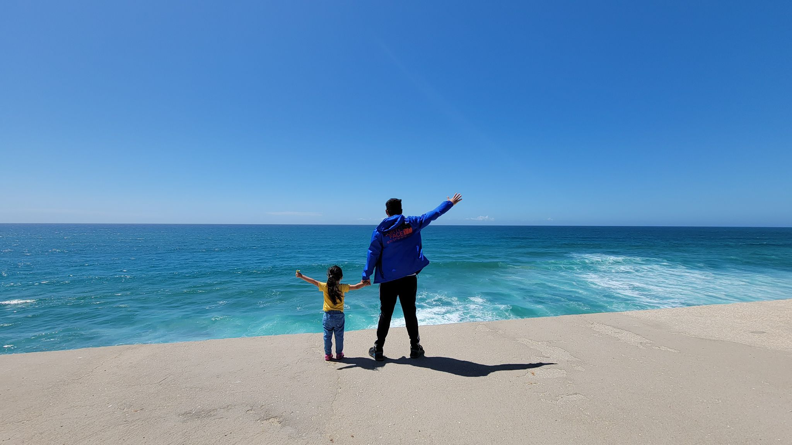
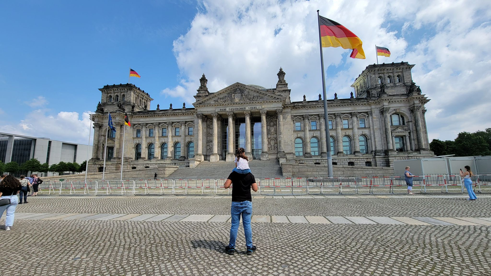

One of my favorites hobbies is traveling
I have several hobbies such as watching movies, jogging, biking, playing video games, and spending time with my family, but One of my favotite one is traveling and seeing new places. I really like to go to a place, try the food, meet new people and their costumes and culture. I have visited several countries all over the world. I have visited as many as 39 countries and counting on. One of my dreams in to visit at least 100 countries.
My favorite one and my opinion
My favorite country so far is Turkey. Turkey is a country with a lot of places an activities to do! Get ready to explore the dynamic city of Istanbul, a city that straddles both Asia and Europe! As a result, it has both the European beauty of ancient, and colorful buildings, combined with Asian spirituality and flavors. Discover the delights of a modern, metropolitan city, that has all the dazzling beauty of the past , and the grace of Islam. Seen within the ancient spice bazaars, spectacular mosques, and palaces with luxurious interiors as beautifully intricate as their exteriors. Relax after an eventful day of history and culture, with a rooftop view and endless choices of mouth-watering Turkish food. Be it sweet baklava, legendary Turkish kebab, or delicious mezze, Turkish food is loved the world over.
 What do I like the most about traveling?
Nowadays traveling with my family is much better than solo traveling. Traveling as a family strengthens ties and ties, strengthens family relationships and is also a good excuse to share a beautiful experience with your loved ones. I really like to travel because I can share very nice moments with my daughter, she gets very happy when we travel, I want her to know the world as I do, traveling is resting and sharing with those she loves the most
  Table of some countries and places I have visited
| Country | Town | Touristic place |
|---|---|---|
| Francia | Paris | Eiffel Tower |
| Colombia | Cartagena | the walled city |
| Mexico | Cancun | Chichen Itza |
| Canada | toronto | CN tower |
| Iceland | Reykjavik | Blue Lagoon |
| Spain | Madrid | Plaza Mayor |
| Turkey | Capadoccia | Ruins of Capadoccia |
| Italy | Rome | Coloseum |
| Germany | Berlin | Berlin Zoo |
| Argentina | Buenos Aires | La Boca |